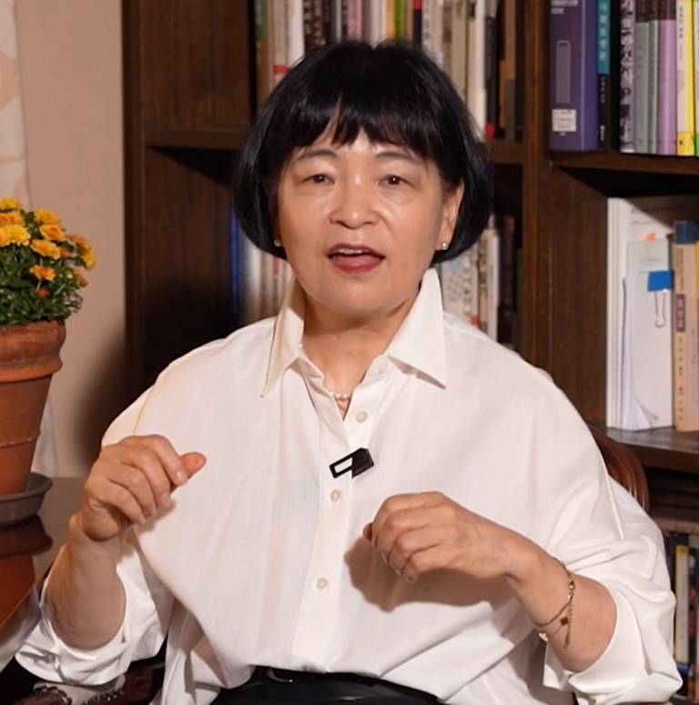
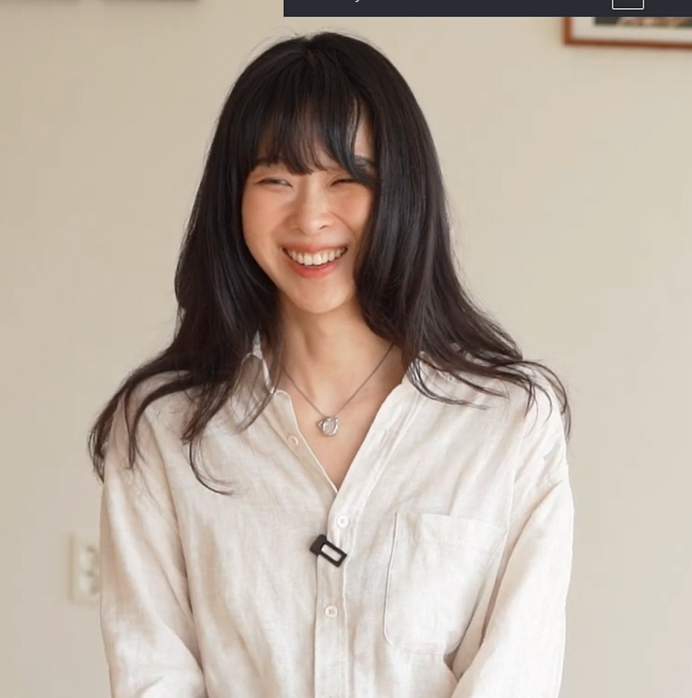

지금의 생각,
을유연재
다양한 시선과 이야기로 이어지는 연재 글.
신간과 작가 이야기를 생생하게 전달합니다.

대한민국 문화가 요즘처럼 사랑받는 때가 없는 것 같아요. 여러 면에서 사람들이 절실하게 이야기를 요구하고 있다는 생각이 들어요. 그런데 이야기가 갑자기 땅에서 솟아오르거나 하늘에서 떨어지지는 않잖아요. 발자크는 그런 면에 있어서 정말 이야기의 보고예요.
자연이라는 것…… 다시 말하면 내가 건드리지 않은 그대로의 모습을 기다렸다가 또는 찾아내서 무언가 더하지 않고 찍는다. 그 안에는 어떤 이야기도 없고, 이야기가 있다면 보는 사람이 적극적으로 상상해서 자기 나름대로 만들어내는 이야기죠.

폴라로이드 에멀전 리프트는 폴라로이드 겉면을 뜯어내고 물에 불리면 아주 얇은 유제층이 물 위를 둥둥 떠다니는데 그걸 종이에 다시 건져 내는 작업이에요. 조금만 잘못 건드려도 찢어질 정도로 약해서 사진을 계속 보살펴 줘야 하고요. 네모반듯했던 프레임은 물속에서 흐르는 듯한 모양으로 종이 위에 얹히는데, 이때 저의 간섭보다는 사진이 자신이 바라는 모양으로 갈 수 있도록 내버려두는 게 저의 일이었어요.
다양한 시선과 이야기로 이어지는 연재 글.